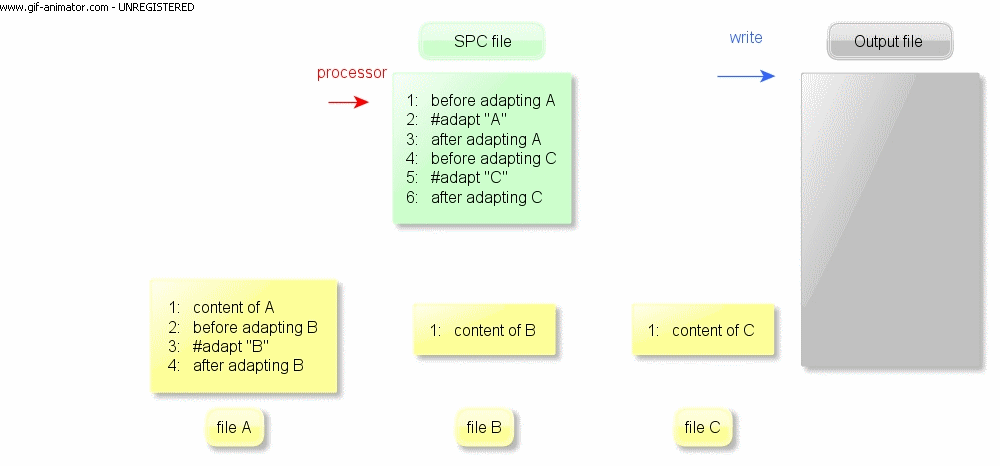

A great way to get introduced to ART language is going through a few tutorials. You can find our sample codes and tutorials here.
If you want to go through the commands, features and how to use them, you can get started here.
You can see some more sophisticated case studies in our publications, we have used Linux code, Java core code, ASP.NET portals etc etc.
You can practice your skills and try your understanding of the language with this small online tool executing ART processor on your code snippets. ARTFiddle.
Adapting files
You can control the file adaption flow with #adapt command.
Syntax:
#adapt[(-samelevel|-copy)][:] path [output-folder] [output-file]
( art-command )*
[#endadapt]
The ART Processor starts processing with the start file a.k.a specification (SPC) file. ART commands in the start file, and in each subsequently adapted file, are processed in the sequence in which they appear. Whenever the processor encounters an #adapt command in the currently processed file, processing of the current file is suspended and the Processor starts processing the given file. Once processing of the file is completed, the Processor resumes processing of the current file just after #adapt command. In that way the processing ends when the Processor reaches the end of the start file.

Options:
-samelevel : The scope of the adapted file will be raised to the current level which makes it possible to override variables (we’ll get back to scoping levels)
-copy : Instead of processing the file, copy it to the output. No ART processing will be done in the file. Can be used to copy non-textual files (.i.e. png, zip)
Command #adapt may specify customizations that should be applied to the adapted file.
It is important not to miss the semicolon “:” character after the #adapt keyword. Customizations may include any ART commands. The syntax and scoping rules for commands used under #adapt command are the same as outside the #adapt command. Important: A chain of #adapt commands must not lead to recursion, i.e., no file can adapt itself directly or indirectly.
Examples:
Variables
#set commands declare variable and assigns value to it.
Syntax:
#set[-multi] varname = “value”[, “value”]*
Options:
-defer : We can defer evaluation of the variable's value. This will be explained later
-multi : The variable will contain multiple values (similar to array or list)
Command #set may assign a single value, or multiple values to the variable, making it a multi-variable.
Syntax to retrieve value(s) of a variable: ?@varname?
Example:
Result:
Loops and Selection
#while command is a generation loop that iterates over its content and generates custom text at each iteration.
Syntax:
#while varname [, varName]*
( textual-content | art-command )*
#endwhile
The #while command is controlled by one or more multi-value variables. The ith value of each of the control variables is used in ith iteration of the loop. This means that all the control variables should have the same number of values, and the number of values determines the number of iterations of the loop. ART Processor interprets the loop body in each iteration and emits custom text accordingly.
The processor interprets the loop body in each iteration and emits custom text accordingly.
Example:
Result:
#select allows us to choose one of many customization options.
Syntax:
#select varname
[#option-undefined
( textual-content | art-command )*
#endoption-undefined]
[#option value[(|value)*] ( textual-content | art-command )*
#endoption]+
[#otherwise
( textual-content | art-command )*
#endotherwise]
#endselect
In the #select body we can have any number of #options, zero or one #option-undefined clause, and zero or one #otherwise clause. ART Processor checks #options in sequential order. If the value given in the option clause is the same as the value of the #select's control variable, the body of that #option is processed. We can use the pipe character “|” as OR in the option’ s value.
The processor selects and processes in turn all the #options whose values match the value of the control variable. #option-undefined is processed if control variable is undefined. #otherwise is processed if none of the #options can be selected.
#select is often placed in the body of #while. This allows us to apply different customization in each of the iteration of the generation loop.
Examples:
A more simple way for selection is using #if - #elif - #else commands.
Syntax:
#if expression
( textual-content | art-command )*
[#elif expression
( textual-content | art-command )*]*
[#else
( textual-content | art-command )*]
#endif
The insert-break Mechanism
An #insert command replaces all matching #breaks with its content. Matching is done by a name (breakname). #break commands in all files reached via #adapt chain can be affected.
Syntax: break
#break[:] breakname
( textual-content | art-command )*
#endbreak
Syntax: insert
#insert[-before|-after] breakname
( textual-content | art-command )*
#endinsert
#insert-before will append the insert body before the breakpoint and keeps the breakpoint’s default content if any.
#insert-after will append the insert body after the breakpoint and keeps the breakpoint’s default content if any.
#insert will replace the breakpoint’s default content if any
We can use combination of these together.
Example:
File A.art
Result:
Guiding through download and executing the processor on local machine + simple small examples
ART Fiddle, running ART code snippets online
How to contribute, finding case studies...